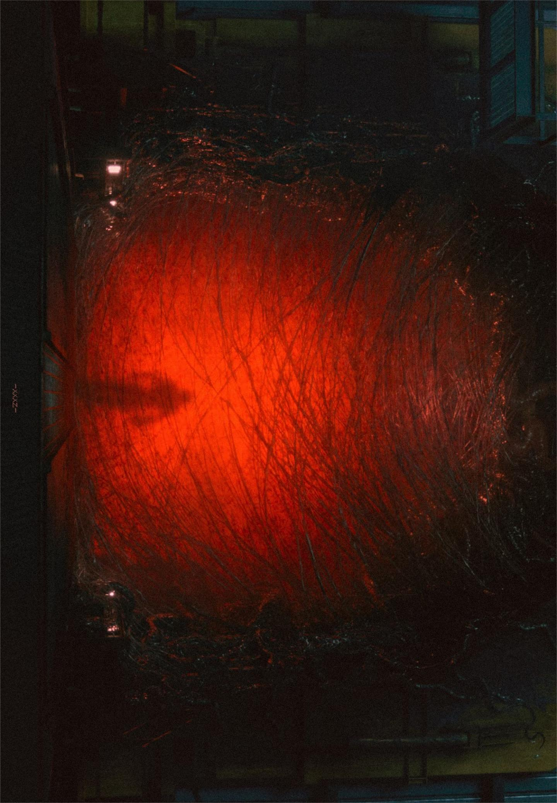

— 我的词书 —
✦ 点击词书开始学习 ✦
✦ 回到入口 ✦
☁️
☁️ 云端同步
GitHub Gist — 换设备也能学
同步状态
未连接
GitHub Token
使用 GitHub Personal Access Token 加密同步。
点此创建 Token →
（需勾选 gist 权限）
连接并同步
DeepSeek API Key
AI 判断正确答案时需要。点此
获取 DeepSeek Key →
保存 API Key
工作原理
输入 Token → 创建/连接同步 Gist（公开可读）
学习数据自动打包同步到云端
所有设备用同一 Token → 共享数据
保存时自动同步，打开时自动拉取
关闭
选 择 阅 读 篇 目
✕ 关闭
录 入 篇 目
篇 目 名 称
✓ 下 一 步
✕ 取 消
篇目标题
单 词 录 入
添加
🤖 AI 一键补全（0 词）
← 修改标题
AI 补全中...
0 / 0
✅ 成功: 0 个 · ❌ 失败: 0 个
💾 保 存 到 阅 读 生 词 簿
+ 继续录入
✅ 录入完成！
✓ 确认
✕ 关闭
短 语 积 累 本
0 条
✨ AI
+ 添加
✕ 关闭
选 择 页 码
点击灯泡进入该页学习
← 返回篇目
✕ 关闭
← 返回页码
0 / 25
← 返回词书选择
✦ 触碰入口 · 聆听深渊 ✦